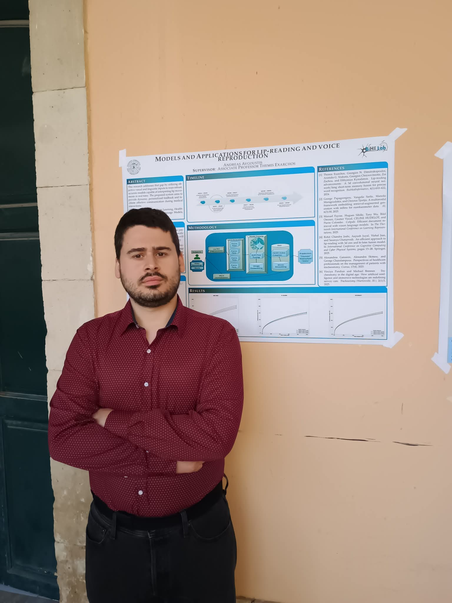

Curriculum Vitae
Research, Publications & Experience
Research, Publications & Experience

PhD Candidate — Visual Speech Recognition & Multimodal Learning
PhD candidate working on visual speech recognition for people who have lost their voice after tracheostomy or laryngectomy. My research asks whether a vision–language model, rather than a conventional video classifier, can recognise Greek speech from lip movement alone with enough accuracy to be usable at the bedside. I built the first Greek viseme-level dataset for this population, designed a deterministic preprocessing pipeline that encodes a video segment as a single image a VLM can ingest, and combined parameter-efficient fine-tuning with dense retrieval and a Greek language model as a correction layer. My interests are multimodal representation learning, efficient adaptation of large pretrained models, and evaluation of these systems under the atypical articulation that real patients present.
Vision–language models (LLaVA, BakLLaVA), QLoRA / parameter-efficient fine-tuning, CNNs, 3D-CNN–LSTM, Transformers, MediaPipe FaceLandmarker, OpenCV.
Retrieval-augmented generation, FAISS dense retrieval, sentence embeddings, Greek LLMs (Krikri), Hugging Face Transformers, PEFT, bitsandbytes.
PyTorch, TensorFlow, Keras, scikit-learn, NumPy, pandas, Apache Spark.
Python, SQL, Git, Docker, cloud GPU training (Google Cloud Platform, Microsoft Azure, Colab), Linux.
R, PHP, PowerShell, Power BI, Tableau, React, Django.
Oral presentations at SMAP 2021 (online) and AIAI 2024 (Corfu, Greece).
Exam invigilation duties, Department of Informatics, Ionian University (2025–2026).
Data Engineering, Full-Stack Python Developer, and Business Analyst Career Track — IT & Engineering School.